#4 – Kombucha Continuous Brew Method

I started my journey of kombucha making, with the continuous brew method. The whole knee-knocking process was new to me, so whether I decided to learn to batch brew or continuous brew… it was all the same me.
After some research, I decided on continuous brew for various reasons. For starters you have less of a risk of mold or other contaminants, less overall work to produce more overall volume, and my supply remains steady and predictable.
If you or your loved ones tend to drink or want to drink kombucha on a regular basis, you will want to learn it this method. If you just wish to have a glass here and there then save yourself the time and purchase it as needed, or batch brew.
What is continuous brew?
Without stating the obvious, continuous brew is pretty much non-stop (except for periodic house cleaning). As you start bottling your brew, you never quite take it all, some is always left in the brewing vessel, more sweet tea is added, and the process just keeps on going.
During this process, you will use a vessel that is fitted with a spigot at the base of the jar. This allows you to drain off your finished kombucha without having to manhandle your SCOBY and generally makes bottling far less of a pain.
Why would I want to do continuous brew?
Well, to put it simply, it will provide you with a non-stop supply of kombucha, it is easier, safer, and a healthier way of making it. If this isn’t your goal, then continuous brew may not be your thing. But also, remember that you can make smaller continuous brews than what I am making. So if you are the only one drinking it in your household, I would go with a one-gallon continuous brewing amount.
Another perk?… continuous brewing also converts sugar more quickly. In batch brewing, there’s a “lag time” before the beneficial yeasts in the SCOBY and starter tea begins converting the sugar. In continuous brew, yeasts are ready to go, and the kombucha ferments much more quickly.
The continuous brew rhythm.
Ok, let’s just pretend that this is, in fact, the first time you are putting your SCOBY to use, and have decided to use the continuous brew method. After you have gone through the fermenting process as explained below, it’s now time to bottle. What I am about to share next is life-shattering, well ok, not really but it’s very important so listen up.
When you are filling up your bottles from the spigot, don’t drain the whole brewing vessel. If you do, you no longer are in the continuous brew club. Don’t worry; I won’t take your badge. hehe For the first batch that you make, you will only remove 50% of the kombucha. This will ensure that a happy balance of yeast and bacteria is left behind which will keep your continuous brew strong, healthy.
Because a large dose of strong healthy kombucha is left behind as a starter liquid, it will shorten each fermenting cycle. This is the sweet spot to be in. You then replace the amount removed with a fresh batch of sweet tea. And from there, the process continues seamlessly. Don’t be intimidated by the length of my instructions. If you know my recipe sharing style, I try to be as detailed as possible so I can set you up for success! Blessings and enjoy. amie sue
The measurements and instructions were created based on the size of brewing container I used. If you want to make smaller batches, you will need to do some math and make adjustments. There are many different ways to do continuous brew… each brewer finds their own rhythm.
P.S. If you question what ingredients and equipment to use, click (here) for ingredients, and (here) for equipment.
yields 2 1/2 gallons
- 2 gallons water
- 8-12 tea bags
- 2 cups organic sugar cane
- 2 large SCOBY’s (each at least 1/4-1/2″ thick)
- 2-4 cups liquid starter (kombucha)
Preparation:
- Have a grown SCOBY ready and waiting.
Brew the tea base:
- In a large stainless steel pot, bring 2 quarts of water to just below the boiling point.
- There is no sense in boiling all the water. By doing it this way, the cool time will be cut down drastically.
- Remove from the heat, add the tea bags and steep for 20 minutes.
- Strain and discard the tea bags, squeezing out the extra water from them into the pot.
- Add the sugar, stirring to make sure it dissolves quickly.
- Pour 1 1/2 gallons of cool water into the brewing vessel and then add the sweet tea.
- The cool water will dilute and cool down the brewed sweet tea.
- Make sure the mixture is about body temperature before adding the SCOBY.
- Don’t add too hot and too cold of water together in the glass vessel. This can cause a crack, and that means EVERYTHING needs to be tossed. I know this from experience, and it was a sad day.
- With clean hands, gently add your SCOBY to the jar and pour the starter liquid on top of the SCOBY.
- By doing it in this order, it acidifies the pH of the tea near the top of the vessel where the culture is most vulnerable.
- Don’t wash your hands with antibacterial soap; this can affect the SCOBY.
- Cover with the breathable cloth or coffee filter, securing it with an elastic band.
Placement of your brewing vessel:
- Keep in a well-ventilated area; the SCOBY thrives on fresh air.
- Keep away from other ferments, and house plants as this can cause cross contamination.
- Ideal fermenting temp is 75-85 degrees (F). We keep our house much cooler than that so I use a heating band like (this) one.
- Too hot can kill the SCOBY and too cold can put it to sleep. (night night all you wonderful bacteria and yeasts)
- Keep out of direct sunlight as it is a natural antibacterial.
- The fermentation can take anywhere from 10-28 days.
- Create a fruit fly trap and keep it close by.
- This will detour them from wanting to set up camp in your brewing vessel. Again, learn from my mistakes.
- Learn how to wrangle in those fruit flies (here).
Testing the fermenting:
- To test the progress, start around day 5. Find your sweet spot of flavor.
- Slide a straw down the side of the jar, past the SCOBY to test the liquid, put your finger over the end of the straw and withdraw a sample.
- Take your sample from as deep in the container the length of the straw will allow.
- It is up to you as to how long the brew continues.
- The longer it ferments, the less sugary and the more vinegary it will get.
- If it tastes too sweet, and it needs more time.
To bottle:
- With continuous brew, you don’t need to remove the SCOBY because you will be draining your completed kombucha through the spigot on the jar. But please keep the protective lid on the jar at all time, so fruit flies don’t get in.
- Speaking of fruit flies… if you have an issue with them, eradicate them before doing any fermenting.
- Place heavy-duty glass bottles under the spigot and fill each jar.
- You can either enjoy as is or do a second fermentation to flavor and effervescence.
- If you don’t want to add flavor and effervescence, fill all the way, cap, and place in the fridge.
- If you wish to add flavor and effervescence, leave about 1/2″ from the top, and click (here) to learn how.
- Don’t drain ALL the kombucha from the container, leave 50 % in the vessel.
- This will be your starter for the continuous brew; this is often referred to a starter liquid.
Feeding the continuous brew:
- Take note of how much kombucha you bottled and replace that amount in the brewing vessel with more sweet tea. Thus the cycle begins!
- As your batch matures, you can get to the point of removing up to 75% of the kombucha at a time, but wait for several batches to pass before you do that.
- You can even get to the point of filling a glass from the spigot and replace that same amount with sweet tea that can be ready and waiting in the fridge. So many different ways to go about this. Stick with one method until you are confident with the process., then play around.
- With progression, kombucha will now take a considerable amount less time to ferment the next batch. Test it on day 5 and take it from there.
- Over time, you will occasionally need to clean the brewing vessel. Learn how (here).
Charting:
- I like to chart each brew that I make. This way I can spot any strange or bet yet. GOOD patterns that are taking place. This is not necessary; it just feeds my type A personality. :)
- Here is a PDF of my chart that you can download and print. Click (Kombucha Brew Chart).
If you have any questions regarding what “events” are taking place in the brewing vessel, click (here).
Brewing the Tea Mixture
-
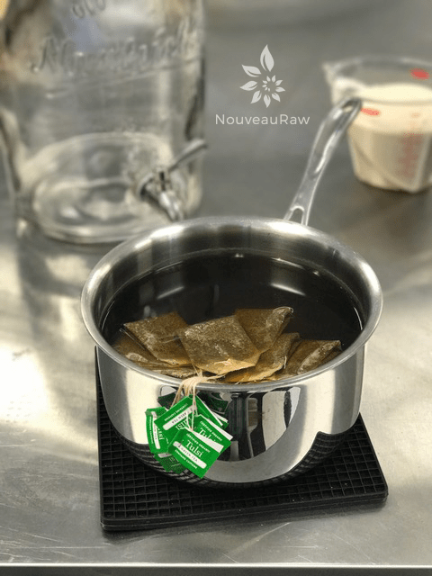
-
Bring 2 quarts of water to a near boil. Turn burner off and add tea bags.
-
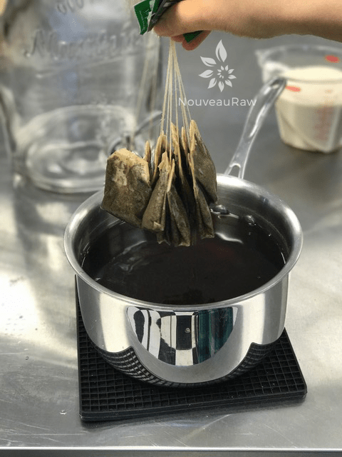
-
After 15 minutes, remove the tea bags and squeeze the excess water from them.
-
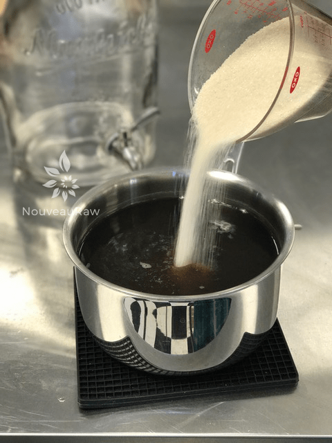
-
Add in the sugar.
-
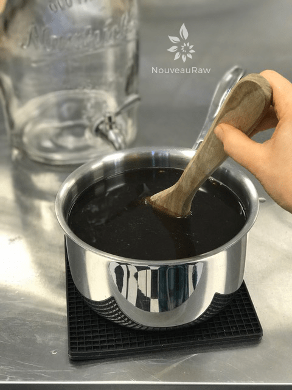
-
Stir until dissolved.
Filling the brewing vessel
-
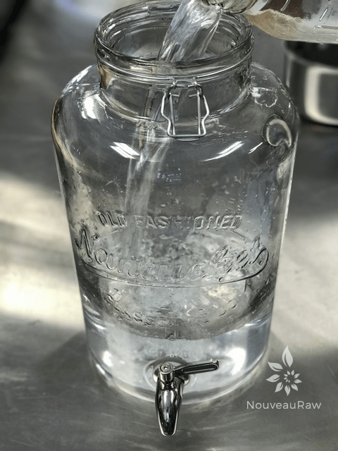
-
Add 2 1/2 gallons of water to the vessel. Make sure it isn’t too cold or hot.
-
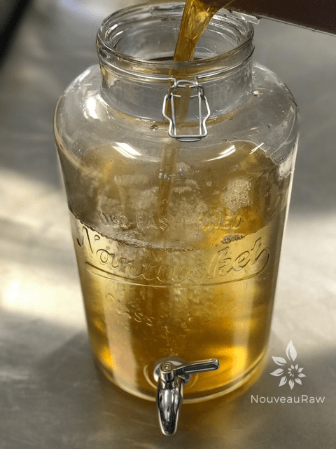
-
Once the brewed tea mixture is done and cool enough, add to the vessel.
-
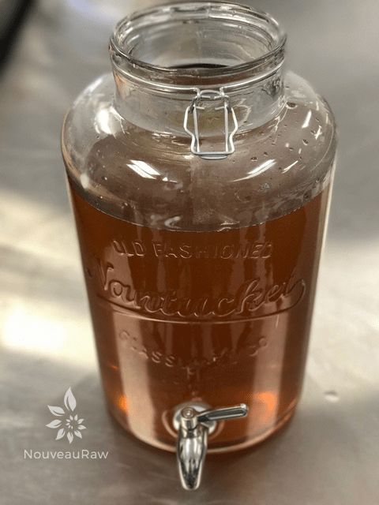
-
Stir everything together.
Adding the Scoby add accessories and brew!
-
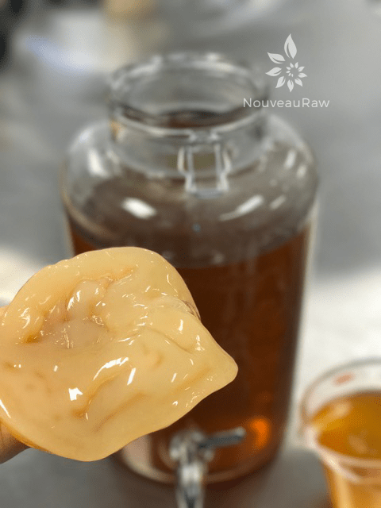
-
Scoby #1 – Nice close up.
-
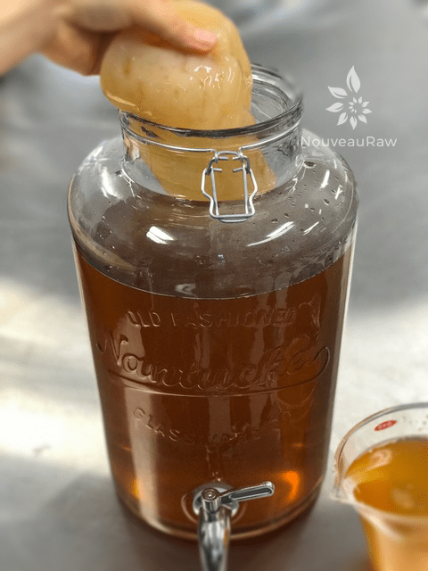
-
Handle only with clean hands!
-
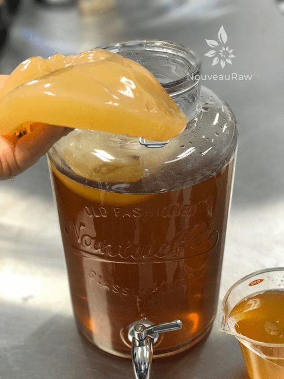
-
Scoby #2 – beautiful!
-
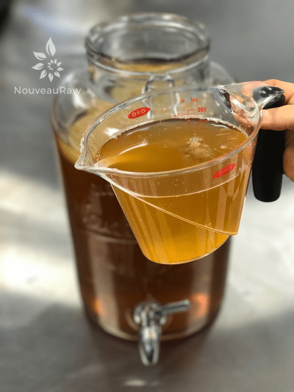
-
Now pour 2 cups of starter liquid on top of the scobies.
-
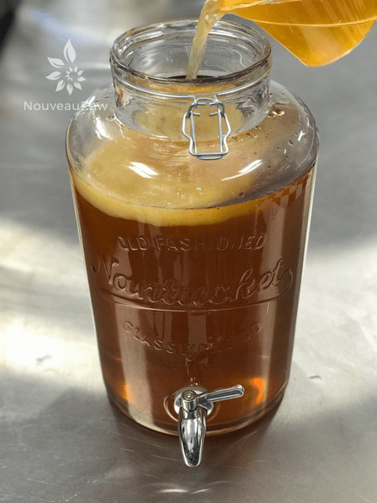
-
Sometimes the scobies will sink, turn, and twist, all is ok.
-
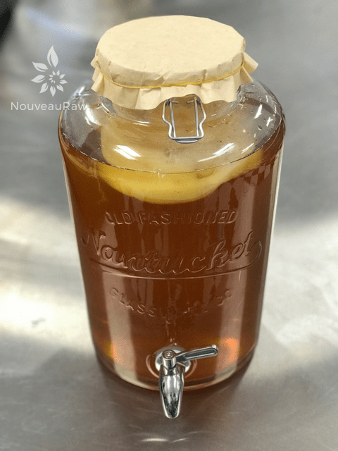
-
Cover with an unbleached coffee filter and secure with a rubberband.
-
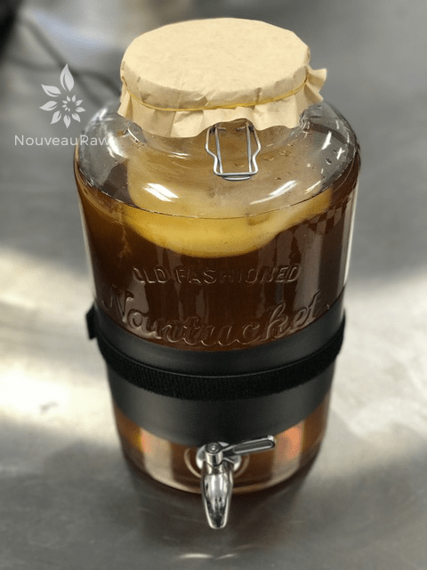
-
Optional – add warming band
-
-
If you have a digital temp controller, set to 86 degrees (F) and let it be. :)
Charting

What is Kombucha?
Kombucha Maintenance of Continuous Brew
Kombucha – Equipment Needed
Kombucha – Ingredients Needed
Kombucha SCOBY – Growing from Scratch
Testing Sugar Levels in Kombucha
Bottling Kombucha from a Continuous Brew
Second Fermentation of Kombucha – Adding Flavor & Effervescence
Kombucha Aesthetics
Kombucha SCOBY Hotel
Dealing with Fruit Flies
© AmieSue.com